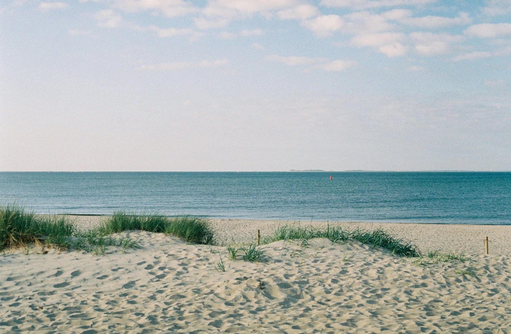
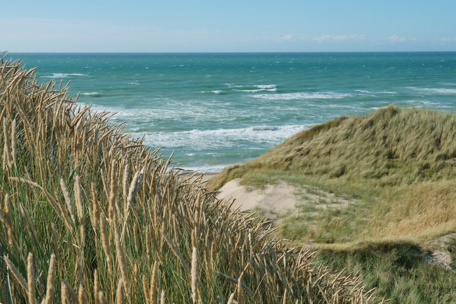
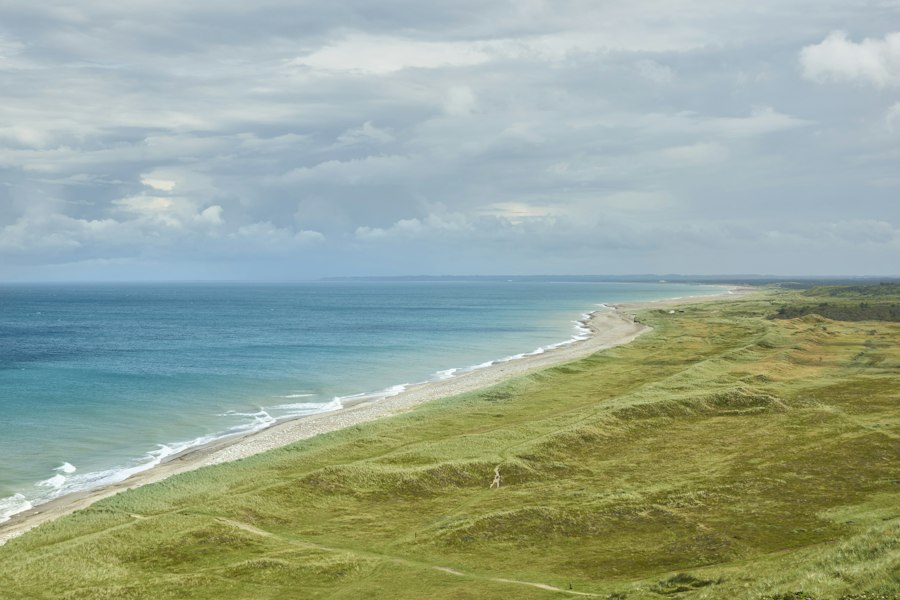

#80A1BA
#91C4C3
#B4DEBD
#FFF7DD
Coastal mineral
Best starting point. Blue, sea glass, sage and cream.
View source paletteA visual study for a recovery companion. Mineral blue, sage, warm ivory and a little room to breathe. These are research alternatives, followed by the selected working system.
Adapted from the coastal Color Hunt palette. Less yellow, less sugar, more contrast. Warm ivory carries the interface; blue and sage create calm zones. Forest and ink carry every meaningful action and instruction.
Best starting point. Blue, sea glass, sage and cream.
View source paletteUseful warm foundation; the blue needs darker text.
View source paletteQuiet green family. Too yellow for the main canvas.
View source paletteGood blue-green balance; original colors are sweeter than our final system.
View source paletteStrong blue, cream and sage. Leave the pink out.
View source paletteA useful muted blue. Reduce the lemon and periwinkle.
View source paletteGood blue-green relationship. Original greens are too bright for this app.
View source paletteNatural film color and an open horizon. A single photograph leads the opening screen. Clinical instructions stay on plain, readable surfaces.



Newsreader gives the welcome and major headings an unhurried editorial voice. Source Sans 3 is a humanist face for controls and care instructions. Care spaces use separated rows; daily tasks sit alongside them on wide screens.
Godly: Superpower informed image scale and deliberate hierarchy. Its commercial claims and visual effects are excluded.
Deck Gallery: Quantum Wellness is a reference for consistent application across surfaces. Its gradients, type choices and motifs conflict with this brief.
Transitions.dev offers useful panel and checkbox state ideas. This app keeps state changes short, has no hover animation, and respects reduced motion. No artificial loading delay.
NHS typography guidance informs consistent hierarchy, legible care copy and underlined text links. This is an independent prototype with its own identity.
Animus.app redirected to a domain-sale page during research on October 17, 2026, so it provided no design reference.